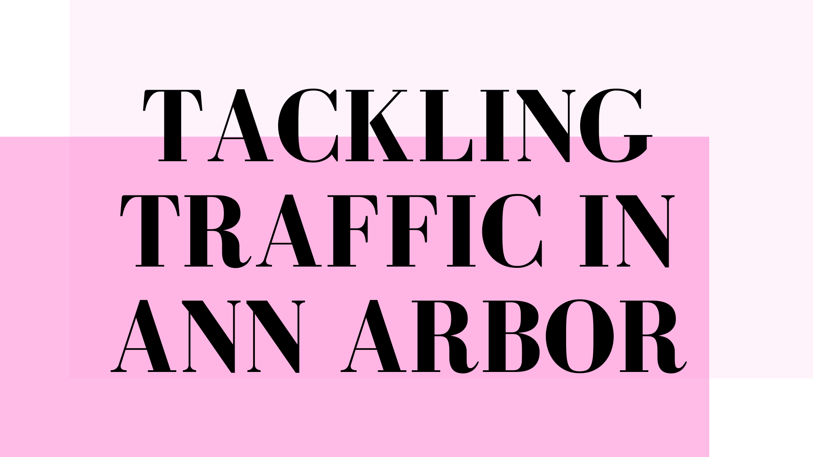

୨୧ · · ♡ · · ୨୧
TACKLING TRAFFIC IN ANN ARBOR

My own research.
Investigation
୨୧ · · ♡ · · ୨୧
- How might we increase support for drivers in Ann Arbor to efficiently navigate through the slow, long, and daunting traffic they encounter daily (and increasingly on the weekends)?
Background & Problem
୨୧ · · ♡ · · ୨୧
- WHO IS AFFECTED? Commuters, visitors, and most drivers in Ann Arbor are frustrated with the traffic congestion occurring in many parts of the town.
- WHY ARE THEY AFFECTED? With narrower lanes, added bike lanes, and shorter traffic lights, drivers are forced to wait in congested roads multiple times during their drive which wastes their time and may lead to road rage. Traffic congestion dramatically increases on gameday weekends due to road closures and the almost double in size of the population. (Ann Arbor pop.: 120,000 || Game Day Tickets pop.: 100,000)
- PROPOSED SOLUTIONS? There are proposed solutions to take busses or carpool but these are not feasible since both instances will also be stuck in traffic. (Living on campus is extremely expensive as well).
Research Questions
୨୧ · · ♡ · · ୨୧
- What does the average process of driving in Ann Arbor look like? What does the extreme process look like? (gamedays)
- What types of frustrations do drivers face when commute times are negatively affected by Ann Arbor traffic?
Persona and Scenario
୨୧ · · ♡ · · ୨୧
- Using insights gathered from the interviews, I crafted personas and scenarios to describe the primary demographic I aimed to reach and propose potential situations they might encounter.
Interview Recruitment
୨୧ · · ♡ · · ୨୧
- Recruiting drivers that have previously mentioned their frustrations dealing with traffic in Ann Arbor:
- Interviews are set in the car
- Field Visit: Observing participants while driving
Interview Guide
୨୧ · · ♡ · · ୨୧
- Interview Stats:
- Participant Count: 5 Drivers
- Duration: 40-60 Minutes
- Route: 9 main traffic points of Ann Arbor
- Questions Asked:
- Warm Up: Tell me about your experience driving in Ann Arbor
- How did you feel driving through Ann Arbor?
- Could you describe the way you tackled the route?
- What made the least sense during your drive?
Interview Coding Process
୨୧ · · ♡ · · ୨୧

Interview Insights
୨୧ · · ♡ · · ୨୧
Reflection
୨୧ · · ♡ · · ୨୧
- As a driver in Ann Arbor, I was a bit biased while conducting this research. However, my key findings from the interviews introduced me to the true needs of drivers in Ann Arbor. My research provided me with the evidence that drivers worry about the safety of others and themselves the most while driving. I realized that most participants were willing to inconvenience themselves just so that they could ensure that everyone around them remained safe. Before this research, I hoped to see drivers complain about the traffic in Ann Arbor but I forgot to remember that most of us only want the best for everyone else.
- My next steps are to create a prototype of an app like Apple Maps or Google Maps in hopes of bettering the driving experience for drivers all over the world. The design will remain simple yet effective like Apple Maps, but will have added features that will focus on avoiding traffic.